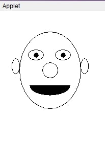

humanFace.java
import java.awt.*;
import java.applet.*;
public class humanFace extends Applet{
public void paint (Graphics g){
g.drawOval(40, 40, 120, 150); // Head
g.drawOval(57, 75, 30, 20); // Left Eye
g.drawOval(110, 75, 30, 20); // Right Eye
g.fillOval(68, 81, 10, 10); // Pupil (left)
g.fillOval(121, 81, 10, 10); // Pupil (right)
g.drawOval(85, 100, 30, 30); // Nose
g.fillArc(60, 125, 80, 40, 180, 180); // Mouth
g.drawOval(25, 92, 15, 30); // Left Ear
g.drawOval(160, 92, 15, 30); // Right Ear
}
}
humanFace.html
<html>
<body>
<applet code="humanFace.class" width="320" height="480"></applet>
</body>
</html>
Terminal
❯ c:\jdk1.3\bin>javac humanFace.java
❯ c:\jdk1.3\bin>appletviewer.exe humanFace.html
Applet Viewer
